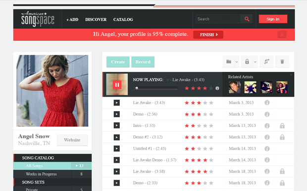

Chris WalkerWeb & Graphic Designer from Memphis, TN
- Work ›
-
Visit PAAY.co
Visit TrainingEveryday.com

See Full Portfolio
- Education ›
-
The University of Memphis
BFA, Graphic Design
(2004 – 2009)
Collierville High School
(2001 – 2003)
- Experience ›
- Graphic / Web Designer
Freelance
August 2010 – Present (2 years 9 months)
- Developed graphics for presentations, marketing materials, and websites for various clients.
- Wrote mobile and responsive websites using HTML, JavaScript, CSS, and PHP.
- Designed mobile user interfaces and optimized icons, backgrounds, buttons, and other graphical assets for iOS and Android applications.
- Worked collaboratively with several startup companies to develop branding, marketing materials, product designs, and websites.
UI/UX Developer & Graphic Designer
ePaymentAmerica
September 2011 – January 2013 (1 year 5 months)
- Worked as sole graphic designer at the company for the IT and marketing departments.
- Produced wireframes, Photoshop mock ups, and graphical assets, for company’s various websites.
- Wrote HTML files based on Photoshop mock ups.
- Designed motion graphics video tutorials for the company’s website.
- Edited styling, content, and graphics for company’s WordPress site.
Enterprise Learning & Development Intern
ServiceMaster Corporate BSC
May 2011 – September 2011 (5 months)
During my summer internship at ServiceMaster I worked on a variety projects ranging from logo design to internal newsletters. I also helped to reorganize and backup the department shared drive filing system.
- Worked with Media Design Manager to develop graphics and animations for video presentations and training programs.
- Worked with interns from other departments to research and present to Senior Vice President of Human Resources, ways to increase ServiceMaster’s brand awareness with local college students and recent graduates.
- Gathered and designed graphical assets and data for presentations.
- Ran sound board volume and microphones for presenters, trainers, and executives during training sessions.
- Edited and designed final deliverables for internal newsletters and communications.
Production Designer
Cleo, Inc.
March 2007 – June 2011 (4 years 4 months)
My job was to create press ready files for our printing factory based in Memphis, TN and our vendors overseas. I am responsible for designing, editing, and filing production art and client projects. I also, develop mock-ups for our Product Sampling Department and our Memphis Show Rooms.
- Worked with in house graphic designers and Packaging Art Manager to create, update, and backup production files.
- Uploaded final deliverables to vendors overseas via FTP.
- Archived digital artwork, and organized finished production art and mock up designs.
- Tested printers for color matching mock ups to final production art.
Artist
Resolute Games
April 2009 – May 2010 (1 year 2 months)
I was one of the artists at Resolute Interactive, a start up company, based in Emerge Memphis. While at the company I worked on a variety of media including mobile software, video games, social networking, web, and print.
- Worked on a variety of client projects for mobile apps, games, web, and print.
- Worked with iOS and Android developers to create and optimize UI assets, illustrations, and concept art for the use in games and apps.
- Tested games and applications for bugs and reported results to the development teams.